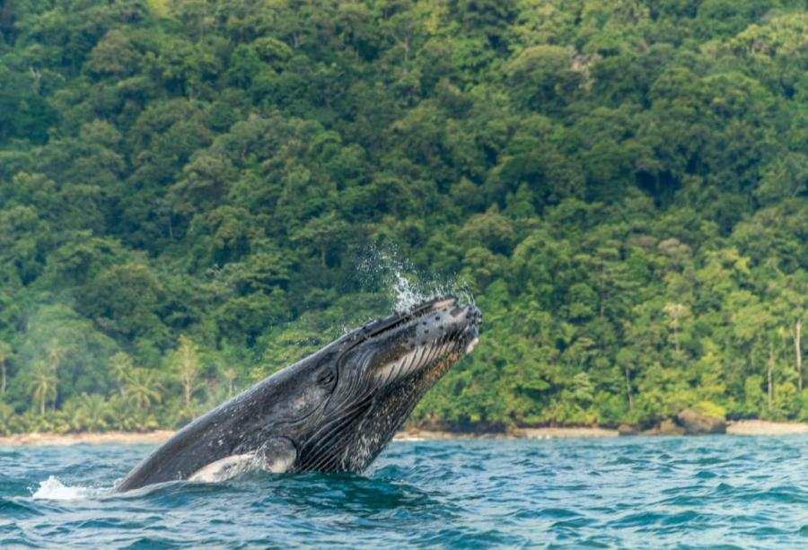
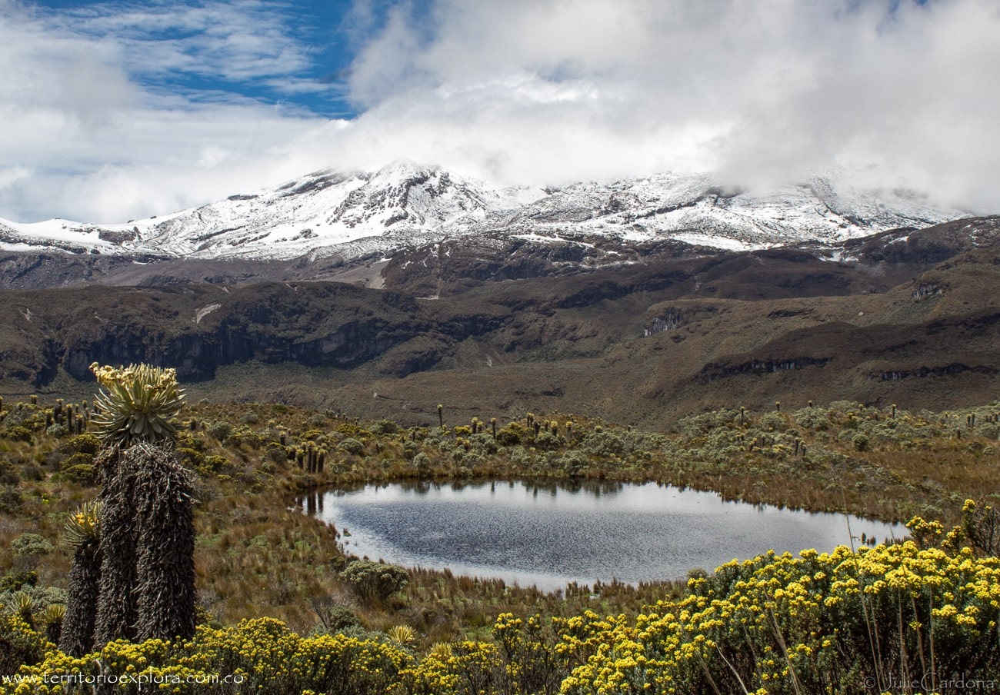

Vista de Ballenas
Actividades
Desierto

Nevados
Cascadas
Vista de ballenas
Colombia
Buenaventura
El Choco es un departamento colombiano donde es posible tener un avistamiento de ballenas en los meses de Junio a Octubre.
Peru
Piura
No te pierdas una experiencia inolvidable: el avistamiento de ballenas en las playas del norte del Perú: Piura y Tumbes.
Chile
Atacama
Sumérgete en una experiencia única con nuestro tour ecológico de navegación, especialmente diseñado para el avistamiento de ballenas / whale watching.
Desiertos
Colombia
Dunas de Taroa
Las Dunas de Taroa, ubicadas en el departamento de Ña Gaujira, Colombia, son impresionantes formaciones de arena blanca que ofrecen vistas espectaculares y un paisaje único, ideal para explorar.
Peru
Ica
El desierto de Ica, en Perú, es un vasto paisaje de dunas doradas y valles oásicos. Su clima cálido y seco alberga una rica biodiversidad y fascinantes formaciones geológicas.
Brasil

Parque Lençóis Maranhenses
El Parque Nacional de los Lençóis Maranhenses, en Brasil, es un paisaje único de dunas de arena blanca intercaladas con lagunas cristalinas. Este paraíso natural ofrece un ecosistema impresionante y actividades al aire libre.
Nevados
Colombia
Nevado del Ruiz
El Nevado del Ruiz, en Caldas Colombia, es un majestuoso volcán de más de 5,300 metros de altura. Su impresionante belleza, con glaciares y paisajes montañosos, atrae a aventureros y amantes de la naturaleza.
Argentina

Villa La Angostura
Villa La Angostura, en Argentina, es un encantador destino turístico rodeado de montañas y lagos. Su belleza natural, con bosques frondosos, ofrece actividades al aire libre y una atmósfera tranquila.
Chile

Volcán Villarica
El volcán Villarica, en Chile, es uno de los más activos del país. Con su cumbre nevada y vistas panorámicas, es un atractivo para escaladores y amantes de la aventura.
Cascadas
Brasil
Casacadas Iguazu
Las Cataratas del Iguazú, ubicadas en la frontera entre Argentina y Brasil, son una de las maravillas naturales del mundo. Su imponente caída de agua y exuberante selva crean un espectáculo inolvidable.
Colombia
Cascada tisquizoque
La cascada Tisquizoque, en Colombia, es un hermoso destino escondido. Sus aguas cristalinas caen en un entorno natural impresionante, rodeado de vegetación y fauna, ideal para los amantes del ecoturismo.
Venezuela

Salto del Angel
El Salto del Ángel, en Venezuela, es la cascada más alta del mundo, con una caída de 979 metros. Su espectacular belleza y entorno selvático atraen a visitantes de todo el mundo.